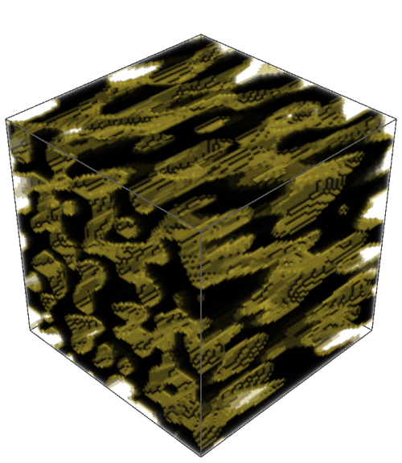

arXiv:2604.08105v1
Direction-Aware TDA
Topological descriptors for Young's modulus prediction in porous materials.
Main claim
Loading direction belongs inside the filtration.
Classical TDA descriptors can erase the axis that controls anisotropic stiffness. This companion connects the manuscript, figures, datasets, methods, performance tables, and interactive explanations in one workspace.
Mechanism
From porous geometry to directional topology
The paper introduces cone-based scalar filtrations and principal-component multifiltrations. These encode whether local material organization aligns with the compression direction before PH and ECP descriptors are vectorized.
Open cone filtration applet
0.978
Directional PH+ECP R2 on RTPxz
0.754
Non-directional PH+ECP R2 on RTPxz
0.985
Voxel CNN R2 on RTPxz
Authors
People and institutions
Paper map
Explorer components
JupyterBook
Context, datasets, filtrations, models, results, references.
Knowledge graph
Interactive graph generated from the Obsidian vault links.
Obsidian vault
Raw Markdown vault snapshot for Obsidian and direct export browsing.
Database browser
Dataset metadata and performance table inspection.
Repository collection
Code and data source links for reproducibility.